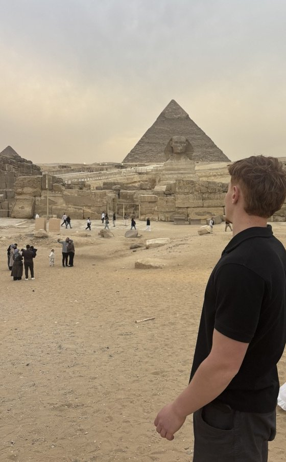

Disponible pour un stage dès le 15 mars 2027
LéoBlondel
Étudiant en 3e année de BUT Techniques de commercialisation à l'IUT de Colmar, parcours marketing digital, e-business et entrepreneuriat. J'ai créé du contenu pour McDonald's France chez BBDO Paris et lancé deux boutiques en ligne.

Pourquoi ce stage
De fin mars à début juin 2026, j'étais dans l'équipe social media de BBDO Paris, sur le compte McDonald's France. J'y ai appris à réagir vite et à parler la langue d'une communauté. Pour mon stage de fin de BUT, je veux aller plus loin que le contenu et comprendre la stratégie qui le porte.
Je cherche une équipe qui me confie des missions entières, de la réflexion à la mise en ligne : construire une stratégie digitale, créer ou faire vivre un site, et intégrer l'IA dans la façon de travailler. Je préfère porter un sujet de bout en bout plutôt qu'en voir un morceau, et je suis prêt à toucher à tout.
Je vise d'abord la Suisse romande. Je travaille en Suisse depuis mes 14 ans et c'est là que je veux construire la suite. Paris reste une option. Dans les deux cas, je veux en profiter pour travailler davantage en anglais.
Ce que j'apporte déjà
Quatre résultats de mon stage chez BBDO Paris. Chacun renvoie à son étude de cas.
- Premiers emplois en SuisseJe travaille l'été en Suisse depuis mes 14 ans.
- Bac mention bienSpécialités maths, SES et anglais, option maths expertes.
- BUT Techniques de commercialisation, IUT de ColmarParcours marketing digital, e-business et entrepreneuriat. Aujourd'hui en 3e année.
- Nasozen, puis FingerLockUne boutique Shopify, puis des cadenas vendus sur TikTok Shop avec un associé : 250 000 vues en 5 jours, sans publicité.
- Stage chez BBDO ParisÉquipe social media, compte McDonald's France, de fin mars à début juin 2026.
- Stage de fin de BUT12 semaines à partir du 15 mars 2027. C'est là que vous intervenez.